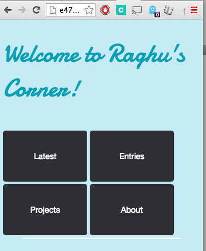
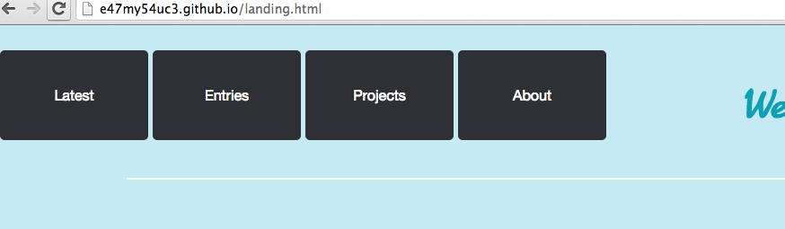

CSS styling
"Cascading. Stylesheet. Struggles."
2/15/2015
For this first entry I'd like to go over a few things that I've learned this week about CSS
CSS is the language that does most of the heavy lifting in terms of creating a great User Experience on the web. While HTML is the language used to identify and thematically group specific ideas and elements on web page, CSS is what is used to identify the color scheme, spacing, and even some of the actions that occur on a website while a user's mouse hovers over a specified area.

Making sure that you're using the correct CSS styling is hard work. For me, I usually end up trying 6 or 7 different ways to create an element before I finally settle on the one that I like the best. I've taken a few art classes before so I have a fairly acute sense of when I want to leave extra space and when I don't want to, which can sometimes lead to frustration because it means I end up working extra to make something look up to my standards. Take a look at these images.

Above is an example of CSS at work. I've intentionally styled my menu in such a way that if and when someone increases or decreases their screen size they will still be able to view the menu buttons. For these actual images I decided to identify the right side "compact" menue image as an image that deserves its own properties independent of the left side long menu image. To that effect, I needed to add an ID to the image itself. If I wanted to identify both images with the same set of properties, I would have to create an overarching class called "menu-images", or something to that effect.
The advantage of using IDs over classes is that they let you independently style an element, so you can effectively get very granular when designing your website. Classes let you add blanket styling choices to multiple elements, so they can be effective when trying to create a blanket template for multiple objects like text alignment, background color schemes, etc.